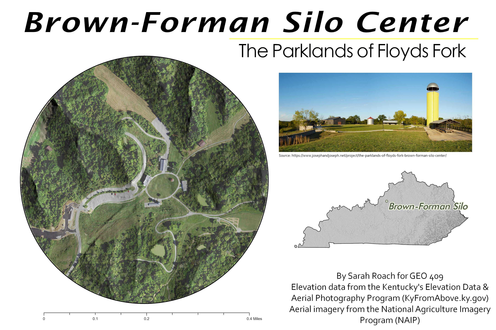

Full Version
Brown-Forman Silo Center in Louisville, Kentucky
Authored by: Sarah Roach
Introduction and Goals
The Brown-Forman Silo Center is located in Turkey Run Park in the Parklands in Louisville, Kentucky. This area of the Parklands was a former diary farm that has been transformed into a community space featuring the Pignic Barn, the Farmer’s Table, Hockensmith Barn, and the 60-foot Silo Lookout. I wanted to highlight this unique area of Louisville that I visit all the time. I also wanted to learn more about this area's history and geography.
Image Source
A view from the silo lookout.
Basemap
This is a basemap of the Brown-Forman Silo Center using a hillshade and aerial photography.

Full Image
GeoPDF
Slideshow
This slideshow looks at the unique places at Brown-Forman Silo Center and also includes a LiDAR point cloud.
Link
Image Source
The view of the silo from inside Hockensmith barn.
Map details
Created by Sarah Roach as a part of a final project in GEO 409 (Spring 2021) at the University of Kentucky on May 14th,2021. Elevation data from the Kentucky's Elevation Data & Aerial Photography Program (KyFromAbove.ky.gov) . Color aerial imagery from the National Agriculture Imagery Program (NAIP) maintained by Kentucky Division of Geographic Information (DGI).
Cesium Ion was used to create the slideshow with information and image sources from The Parklands and Joseph and Joseph.
ArcGIS Pro was used to process LiDAR data and a Python script was developed to automate this process and is found in this Jupyter Notebook.